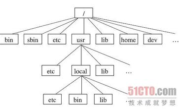

讲道理这章应该讲怎么装系统，但是之前有一些知识还是需要大家提前了解一下
BIOS和MBR,EFI和GPT，这些东西的区别，我们不准备细讲，大概讲讲，然后因为柏阿姨要求布置作业。。。你们懂得
MBR和GPT，之前的旧机子一般都用MBR，然后现在的新机子一般采用GPT，不过也有MBR和GPT互转的方法
然后我觉得安装系统还需要先简单了解一些linux的目录树
简单说说，最上的/是根目录，其他的目录都是根目录下的目录
然后安装的时候会让你们自己选择分区，我们可以直接就给/分就好了
当然也可以单独为某个目录分大小，但是目前我看来是没有必要的
还有swap分区，这个关于swap分区的作用我们以后会讲，原则上是要分的，原则上建议分和你的内存一样大,如果你的磁盘不够分个1个g也没事
接下来就是最重要的启动分区，如果是虚拟机，就直接下一步就行，别忘了重启的时候把启动顺序改一下
如果你装的是双系统，如果你的是GPT，那么你可以找到一个分区是windows EFI的分区，直接把启动器安装到那个分区就好,新手不建议直接双系统，可以先远程登陆或者虚拟机练习练习